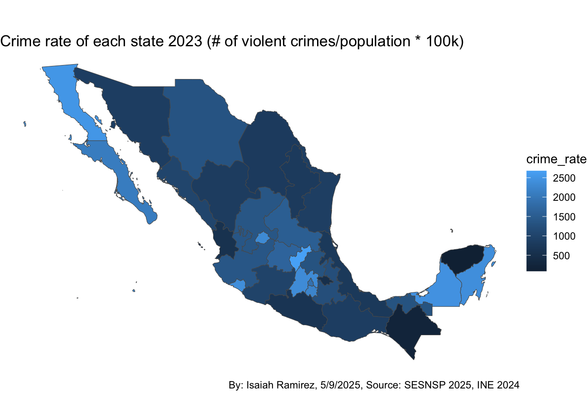
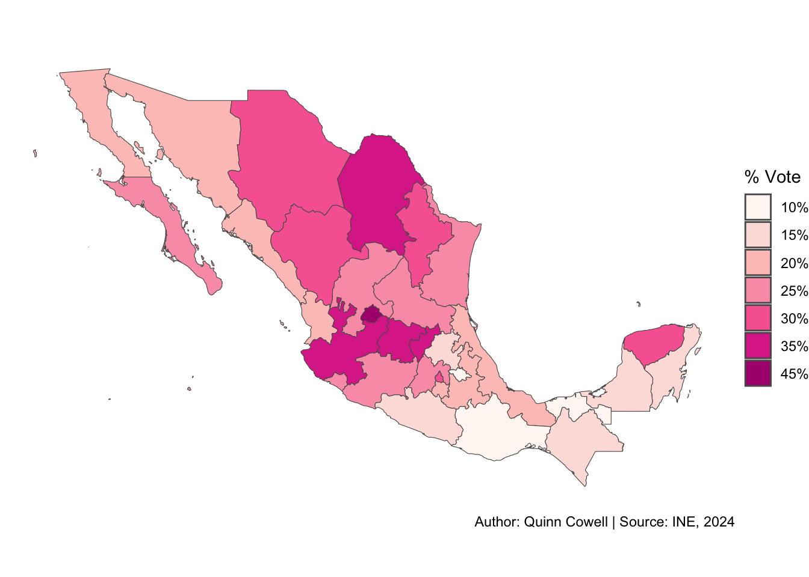

An Analysis of the 2024 Mexican Presidential Election
Your report will go here.
# putting all the data shit in one chunk so we can collapse it more easily later
# load presidential election data
library(tidyverse)
library(stringi)
library(rnaturalearth)
library(RColorBrewer)
presidencial <- read_delim("data/presidential/PRES_2024.csv", delim = "|", skip = 6, locale = locale(encoding = "latin1"))Rows: 170766 Columns: 34
── Column specification ────────────────────────────────────────────────────────
Delimiter: "|"
chr (31): CLAVE_CASILLA, CLAVE_ACTA, ID_ENTIDAD, ENTIDAD, ID_DISTRITO_FEDERA...
dbl (3): TIPO_ACTA, TOTAL_VOTOS_CALCULADOS, LISTA_NOMINAL
ℹ Use `spec()` to retrieve the full column specification for this data.
ℹ Specify the column types or set `show_col_types = FALSE` to quiet this message.presidential <- presidencial |>
rename(
casilla_code = CLAVE_CASILLA,
acta_code = CLAVE_ACTA,
ID_entity = ID_ENTIDAD,
entity_state = ENTIDAD,
ID_federal_district = ID_DISTRITO_FEDERAL,
federal_district = DISTRITO_FEDERAL,
section = SECCION,
casilla_id = ID_CASILLA,
casilla_type = TIPO_CASILLA,
ext_contigua = EXT_CONTIGUA,
casilla = CASILLA,
acta_type = TIPO_ACTA,
independent = `CANDIDATO/A NO REGISTRADO/A`,
null_votes = `VOTOS NULOS`,
total_votes = TOTAL_VOTOS_CALCULADOS,
eligible_voters = LISTA_NOMINAL,
observations = OBSERVACIONES,
transfer_mechanism = MECANISMOS_TRASLADO,
date_time = FECHA_HORA
) |>
filter(total_votes != 0) |>
mutate_at(vars(13:31), as.numeric) |>
mutate(sheinbaum = PT + MORENA + PVEM_PT_MORENA + PVEM_PT + PVEM_MORENA + PT_MORENA + PVEM) |>
mutate(galvez = PAN + PAN_PRI_PRD + PAN_PRI + PAN_PRD + PRI + PRI_PRD + PRD) |>
mutate(maynez = MC)
# clean it again because i realized i wasn't htorough enough the first time but i used the original dataset in my eda
presidential_clean <- presidential |>
mutate(casilla = fct_recode(casilla, "Non-urban" = "No Urbana", "Urban" = "Urbana")) |>
mutate(entity_state = str_to_title(entity_state)) |>
mutate(entity_state = str_replace(entity_state, "Ciudad De México", "Distrito Federal")) |>
select(casilla_code, acta_code, ID_entity, entity_state, casilla_type, casilla, independent, null_votes, total_votes, eligible_voters, sheinbaum, galvez, maynez) |>
rename(
id_state = ID_entity,
state = entity_state
)
# IGNORE THE ONE CALLED `presidential_clean.csv`!!!!!!!
# presidential election percentages dataset
pres_percents <- presidential |>
group_by(entity_state) |>
summarise(
tot_sheinbaum = sum(sheinbaum),
tot_galvez = sum(galvez),
tot_maynez = sum(maynez),
total_votes = sum(total_votes)) |>
mutate(
pct_sheinbaum = tot_sheinbaum/total_votes,
pct_galvez = tot_galvez/total_votes,
pct_maynez = tot_maynez/total_votes) |>
mutate(entity_state = str_to_title(entity_state)) |>
mutate(entity_state = str_replace(entity_state, "Ciudad De México", "Distrito Federal")) |>
select(-starts_with("tot")) |>
mutate(pct_sheinbaum_cats =
cut(pct_sheinbaum,
breaks = seq(.4, .85, by = .05),
labels = c("40%", "45%", "50%", "55%", "60%", "65%", "70%", "75%", "80%"),
include.lowest = TRUE
),
pct_galvez_cats =
cut(pct_galvez,
breaks = seq(.1, .5, by = .05),
labels = c("10%", "15%", "20%", "25%", "30%", "35%", "40%", "45%"),
include.lowest = TRUE
),
pct_maynez_cats =
cut(pct_maynez,
breaks = seq(.05, .25, by = .03),
labels = c("5%", "8%", "11%", "14%", "17%", "20%"),
include.lowest = TRUE
))
# now we're going to upload and clean some statistical data from Mexico
# population by state
population_messy <- read_csv("data/originals/population_state_1020.csv")Rows: 64 Columns: 4
── Column specification ────────────────────────────────────────────────────────
Delimiter: ","
chr (1): State
dbl (3): State ID, Year, Population
ℹ Use `spec()` to retrieve the full column specification for this data.
ℹ Specify the column types or set `show_col_types = FALSE` to quiet this message.population_20 <- population_messy |>
filter(Year == 2020) |>
mutate(
State = str_replace(State, "Ciudad de México", "Distrito Federal"),
State = str_replace(State, " de Zaragoza", ""),
State = str_replace(State, "Estado de ", ""),
State = str_replace(State, " de Ocampo", ""),
State = str_replace(State, " de Ignacio de la Llave", "")) |>
rename(
state = State,
year = Year,
id_state = `State ID`,
pop = Population
)
# quarterly income by state and year (MXP)
income_messy <- read_csv("data/originals/income_state_1622.csv")Rows: 128 Columns: 4
── Column specification ────────────────────────────────────────────────────────
Delimiter: ","
chr (1): State
dbl (3): State ID, Year, Quarterly Income
ℹ Use `spec()` to retrieve the full column specification for this data.
ℹ Specify the column types or set `show_col_types = FALSE` to quiet this message.income_16_22 <- income_messy |> # keeping year-by-year data as possible analysis tool
mutate(
State = str_replace(State, "Ciudad de México", "Distrito Federal"),
State = str_replace(State, " de Zaragoza", ""),
State = str_replace(State, "Estado de ", ""),
State = str_replace(State, " de Ocampo", ""),
State = str_replace(State, " de Ignacio de la Llave", "")) |>
rename(
state = State,
year = Year,
id_state = `State ID`,
income_quarterly_mxp = `Quarterly Income`
)
# violent crime by state (data in Spanish)
crimes_messy <- read_csv("data/originals/crimes_state_1524.csv")Rows: 12800 Columns: 6
── Column specification ────────────────────────────────────────────────────────
Delimiter: ","
chr (2): Crime Type, State
dbl (4): Year, Crime Type ID, State ID, Value
ℹ Use `spec()` to retrieve the full column specification for this data.
ℹ Specify the column types or set `show_col_types = FALSE` to quiet this message.violent_crimes_18_23 <- crimes_messy|> # we only want crime data from 2023 as it was before the election, possible avg after 2018
mutate(
State = str_replace(State, "Ciudad de México", "Distrito Federal"),
State = str_replace(State, " de Zaragoza", ""),
State = str_replace(State, "Estado de ", ""),
State = str_replace(State, " de Ocampo", ""),
State = str_replace(State, " de Ignacio de la Llave", "")) |>
filter(Year %in% c(2019, 2020, 2021, 2022, 2023)) |> #removing data pre-AMLO + election years
# we will be using the FBI's definition of violent crime to filter the list
filter(`Crime Type` %in% c("Robo",
"Violación Equiparada",
"Violación Simple",
"Homicidio",
"Lesiones",
"Otros Delitos que Atentan contra la Vida y la Integridad Corporal")) |>
group_by(State, Year, `State ID`) |>
summarise(tot_viol_crime = sum(Value)) |>
rename(
state = State,
year = Year,
id_state = `State ID`
)`summarise()` has grouped output by 'State', 'Year'. You can override using the
`.groups` argument.# indigenous mexicans (by state, those who speak an indigenous language)
# ¡UNZIP mx_census_2020.csv ZIP FILE TO RUN!
# census_messy <- read_csv("data/originals/mx_census_2020.csv")
# census_messy |>
# filter(NOM_LOC == "Total de la Entidad") |> # census totals by state
# mutate(
# NOM_ENT = str_replace(NOM_ENT, "Ciudad de México", "Distrito Federal"),
# NOM_ENT = str_replace(NOM_ENT, " de Zaragoza", ""),
# NOM_ENT = str_replace(NOM_ENT, " de Ocampo", ""),
# NOM_ENT = str_replace(NOM_ENT, " de Ignacio de la Llave", "")) |>
# select(1:2, 10, 124:139) |>
# select(-contains("AFRO"), -ends_with("_M"), -ends_with("_F")) |>
# rename(
# id_state = ENTIDAD,
# state = NOM_ENT,
# tot_pop = POBTOT,
# indigenous_hh = PHOG_IND
# ) |>
# mutate_at(vars(4:10), as.numeric) |>
# mutate(pct_indigenous = (indigenous_hh/tot_pop)*100)
# import second indigenous dataset idfk (those who self-identify as indigenous)
library(readxl)
indigenous_messy <- read_excel("data/originals/1-poblacion-indigena-autoadscrita-nacional-y-por-entidad-federativa-muestra-censal-2020.xlsx",
skip = 3)
indigenous_pop_24 <- indigenous_messy |>
filter(!is.na(Entidad)) |>
filter(Entidad != "Estados Unidos Mexicanos") |>
mutate(
Entidad = str_replace(Entidad, "Ciudad de México", "Distrito Federal"),
Entidad = str_replace(Entidad, " de Zaragoza", ""),
Entidad = str_replace(Entidad, " de Ocampo", ""),
Entidad = str_replace(Entidad, " de Ignacio de la Llave", "")) |>
filter(Estimador == "Estimación") |>
select(`Clave de la entidad`, Entidad, Tipo, `Se considera indígena`) |>
pivot_wider(names_from = Tipo, values_from = `Se considera indígena`) |>
rename(
id_state = `Clave de la entidad`,
state = Entidad,
pop_ind = Población,
pct_ind = Porcentaje
)
# democracy index economist
mx_dem_index <- tribble(
~year, ~ranking, ~regime_type,
2010, 6.93, "Flawed democracy",
2011, 6.93, "Flawed democracy",
2012, 6.90, "Flawed democracy",
2013, 6.91, "Flawed democracy",
2014, 6.68, "Flawed democracy",
2015, 6.55, "Flawed democracy",
2016, 6.47, "Flawed democracy",
2017, 6.41, "Flawed democracy",
2018, 6.19, "Flawed democracy",
2019, 6.09, "Flawed democracy",
2020, 6.07, "Flawed democracy",
2021, 5.57, "Hybrid regime",
2022, 5.25, "Hybrid regime",
2023, 5.14, "Hybrid regime",
2024, 5.32, "Hybrid regime"
)
#mexico map
mexico <- ne_states(country = "Mexico")# democracy
mx_dem_index |>
ggplot(aes(x = year, y = ranking)) +
geom_abline(slope = 0, intercept = 6.0, color = "grey", linetype = 5) +
geom_line() +
scale_y_continuous(name = "Score", breaks = c(4, 5, 6, 7, 8), limits = c(4, 8)) +
scale_x_continuous(name = "Year", breaks = c(2010, 2012, 2014, 2016, 2018, 2020, 2022, 2024)) +
annotate("text",
label = "Flawed democracy",
x = 2017.5,
y = 7.25,
size = 4.5,
color = "grey",
fontface = "italic") +
annotate("text",
label = "Hybrid regime",
x = 2017.5,
y = 5.25,
size = 4.5,
color = "grey",
fontface = "italic") +
annotate("text",
label = "AMLO elected",
x = 2018.95,
y = 6.3,
size = 3) +
geom_point(x = 2018, y = 6.19, size = 2) +
theme_minimal() +
labs(title = "Economist Democracy Score for Mexico, 2010-2024", caption = "Author: Quinn Cowell | Source: Economist Group 2024")
# comparative state-by-state bar graph
presidential |>
group_by(entity_state) |>
summarise(
tot_sheinbaum = sum(sheinbaum),
tot_galvez = sum(galvez),
tot_maynez = sum(maynez),
total_votes = sum(total_votes))|>
mutate(
Sheinbaum = tot_sheinbaum/total_votes,
Gálvez = tot_galvez/total_votes,
Máynez = tot_maynez/total_votes) |>
mutate(entity_state = str_to_title(entity_state)) |>
mutate(entity_state = str_replace(entity_state, "Ciudad De México", "Distrito Federal")) |>
select(-starts_with("tot")) |>
pivot_longer(2:4, names_to = "Candidate", values_to = "Vote Share") |>
mutate(Candidate = fct_relevel(Candidate, c("Sheinbaum", "Gálvez", "Máynez"))) |>
ggplot(aes(x = entity_state, y = `Vote Share`, fill = Candidate)) +
geom_col(position = "fill") +
scale_y_continuous(name = "Vote Share", breaks = c(0, .25, .5, .75, 1), labels = c("0%", "25%", "50%", "75%", "100%")) +
coord_flip() +
scale_fill_manual(values = c("Sheinbaum" = "#b62218", "Gálvez" = "#ef64bc", "Máynez" = "#FF8C00")) +
theme_minimal() +
labs(x = "State/District", caption = "Author: Quinn Cowell | Source: INE, 2024")
# A tibble: 32 × 4
id_state state pop_ind pct_ind
<chr> <chr> <dbl> <dbl>
1 05 Coahuila 63417 0.0213
2 32 Zacatecas 74582 0.0488
3 01 Aguascalientes 83200 0.0617
4 11 Guanajuato 372169 0.0639
5 19 Nuevo León 352790 0.0640
6 28 Tamaulipas 224210 0.0667
7 14 Jalisco 557864 0.0704
8 02 Baja California 285679 0.0797
9 10 Durango 152793 0.0887
10 09 Distrito Federal 825325 0.0928
# ℹ 22 more rowsmexico |>
left_join(indigenous_pop_24, join_by(name == state)) |>
mutate(pct_ind_cat =
cut(pct_ind,
breaks = c(0, .07, .11, .16, .26, .36, .48, .70),
labels = c("2%-7%", "7%-11%", "11%-16%", "16%-26%", "26%-36%", "36%-48%", "48%-69%")
)) |>
ggplot() +
geom_sf(aes(fill = pct_ind_cat)) +
theme_void() +
scale_fill_manual(values = brewer.pal(7, "BuGn"), name = "% Indigenous", na.translate = FALSE) +
labs(title = "% Self-identified Indigenous by State in Mexico", caption = "Author: Quinn Cowell | Source: INPI 2020")
indigenous_pop_24 |>
select(-id_state) |>
left_join((pres_percents |> select(-contains("cats"))), join_by(state == entity_state)) |>
ggplot(aes(x = pct_ind, y = pct_sheinbaum)) +
geom_point() +
theme_minimal() +
scale_x_continuous(breaks = seq(0, .8, by = .2), labels = c("0%", "20%", "40%", "60%", "80%")) +
scale_y_continuous(breaks = seq(.4, .9, by = .1),labels = c("40%", "50%", "60%", "70%", "80%", "90%")) +
labs(title = "% Sheinbaum vote vs. % Indigenous, by State",
caption = "Author: Quinn Cowell | Source: INE 2024, INPI 2020",
x = "% Indigenous",
y = "% Sheinbaum")
# Average violent crimes per state across all years
crime_avg <- violent_crimes_18_23 %>%
group_by(state) %>%
summarise(avg_violent_crime = mean(tot_viol_crime, na.rm = TRUE))
# Get Mexico shapefile
mexico <- ne_states(country = "Mexico", returnclass = "sf")
# Fix state names before merging
crime_avg <- crime_avg %>%
mutate(state = state |>
str_replace("Ciudad de México", "Distrito Federal") |>
str_replace(" de Zaragoza", "") |>
str_replace(" de Ocampo", "") |>
str_replace(" de Ignacio de la Llave", "")
)
combined_data <- crime_avg %>%
left_join(pres_percents, join_by(state == entity_state))
combined_data <- combined_data |> # (this "old" combined_data you had earlier)
left_join(
violent_crimes_18_23 |>
filter(year == 2023) |>
left_join(population_20, join_by(state == state)) |>
mutate(
crime_rate = (tot_viol_crime / pop) * 100000
),
join_by(state == state)
)
# Merge spatial data
mexico_crime <- mexico %>%
left_join(crime_avg, by = c("name" = "state"))
# Plot the choropleth
mexico |>
left_join(combined_data, join_by(name == state)) |>
ggplot() +
geom_sf(aes(fill = crime_rate)) +
theme_void()
# Step 2: Plot point plot
ggplot(combined_data, aes(x = crime_rate, y = pct_sheinbaum)) +
geom_point() +
labs(
x = "Crime Rate (per 100,000 people)",
y = "Sheinbaum Vote %",
title = "Crime Rate vs Sheinbaum Vote % (2023)"
) +
theme_minimal()
# Calculate the average income per state across all years
income_avg <- income_16_22 %>%
group_by(state) %>%
summarise(avg_income = mean(income_quarterly_mxp, na.rm = TRUE))
# Get a shapefile or geometry of Mexican states
# We'll use rnaturalearth for a quick version
library(rnaturalearth)
library(rnaturalearthdata)
# Download Mexico map
mexico <- ne_states(country = "Mexico", returnclass = "sf")
# Check state names if necessary
unique(mexico$name) [1] "Sonora" "Baja California" "Chihuahua"
[4] "Coahuila" "Tamaulipas" "Nuevo León"
[7] "Quintana Roo" "Campeche" "Tabasco"
[10] "Chiapas" "Colima" "Nayarit"
[13] "Baja California Sur" "Sinaloa" "Yucatán"
[16] "Veracruz" "Jalisco" "Michoacán"
[19] "Guerrero" "Oaxaca" NA
[22] "México" "Puebla" "Morelos"
[25] "Querétaro" "Hidalgo" "Guanajuato"
[28] "San Luis Potosí" "Zacatecas" "Aguascalientes"
[31] "Durango" "Tlaxcala" "Distrito Federal" [1] "Aguascalientes" "Baja California" "Baja California Sur"
[4] "Campeche" "Chiapas" "Chihuahua"
[7] "Coahuila" "Colima" "Distrito Federal"
[10] "Durango" "Guanajuato" "Guerrero"
[13] "Hidalgo" "Jalisco" "Michoacán"
[16] "Morelos" "México" "Nayarit"
[19] "Nuevo León" "Oaxaca" "Puebla"
[22] "Querétaro" "Quintana Roo" "San Luis Potosí"
[25] "Sinaloa" "Sonora" "Tabasco"
[28] "Tamaulipas" "Tlaxcala" "Veracruz"
[31] "Yucatán" "Zacatecas" # Join your income data with the Mexico shapefile
mexico_income <- mexico %>%
left_join((income_avg|>mutate(
state = str_replace(state, "Ciudad de México","Distrito Federal"),
state = str_replace(state, " de Zaragoza",""),
state = str_replace(state, " de Ocampo",""),
state = str_replace(state, " de Ignacio de la Llave",""))), by = c("name" = "state"))
# Plot the choropleth
ggplot(mexico_income) +
geom_sf(aes(fill = avg_income)) +
scale_fill_viridis_c(option = "plasma", na.value = "gray90") +
theme_void() +
labs(
title = "Average Income by State in Mexico",
fill = "Avg Income"
)
# Step 1: Make sure names match
# Clean state names in crime_avg
crime_avg <- crime_avg %>%
mutate(state = state |>
str_replace("Ciudad de México", "Distrito Federal") |>
str_replace(" de Zaragoza", "") |>
str_replace(" de Ocampo", "") |>
str_replace(" de Ignacio de la Llave", "")
)
# Step 2: Join the datasets
combined_data <- crime_avg %>%
left_join(pres_percents, by = c("state" = "entity_state"))
# Step 1: Create combined_data
combined_data <- combined_data |> # (this "old" combined_data you had earlier)
left_join(
violent_crimes_18_23 |>
filter(year == 2023) |>
left_join(population_20, join_by(state == state)) |>
mutate(
crime_rate = (tot_viol_crime / pop) * 100000
),
join_by(state == state)
)
# Combine combined_data and income_avg by matching 'state' and 'State'
combined_data <- combined_data %>%
left_join(income_avg, by = c("state" = "state"))
ggplot(combined_data, aes(x = avg_income, y = pct_sheinbaum)) +
geom_point() +
labs(
x = "Average Income",
y = "Sheinbaum Vote %",
title = "Income in a state vs. Sheinbaum Vote %"
) +
theme_minimal()# call map of states
mexico <- ne_states(country = "Mexico")
# plot Sheinbaum results
mexico |>
left_join(pres_percents, join_by(name == entity_state)) |>
ggplot() +
geom_sf(aes(fill = pct_sheinbaum_cats)) +
theme_void() +
scale_fill_manual(values = brewer.pal(9, "Reds"), name = "% Vote", na.translate = FALSE) +
labs(caption = "Author: Quinn Cowell | Source: INE, 2024")
# plot Gálvez results
mexico |>
left_join(pres_percents, join_by(name == entity_state)) |>
ggplot() +
geom_sf(aes(fill = pct_galvez_cats)) +
theme_void() +
scale_fill_manual(values = brewer.pal(8, "RdPu"), name = "% Vote", na.translate = FALSE) +
labs(caption = "Author: Quinn Cowell | Source: INE, 2024")